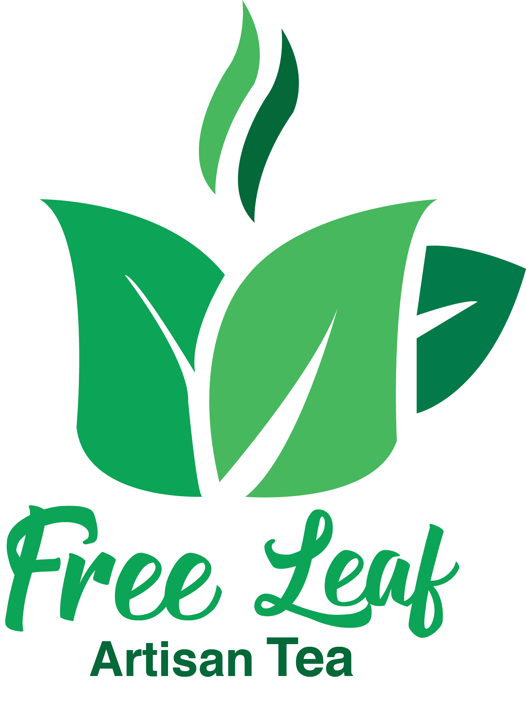

For this project I had to make type and a picture interact with eachother. Basketball is very important to me and I have played it my whole life so I thought having text and pictures realte to basketball it would be perfect for this project.

For this project we had to make a self protrait of ourselves so I wanted to do a basketball theme again becuase I can easily relate to that. I did a transition from my high school to college and having myself fade into Naz becuase this is where I am now.

For this project I had to come up with a logo and packaging desgin for this company named Free Leaf Artisan Tea. I wanted to make the tea cup out of leaves and make it look healthy becuase I was trying to get attention of a more high end tea.
